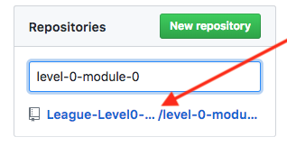
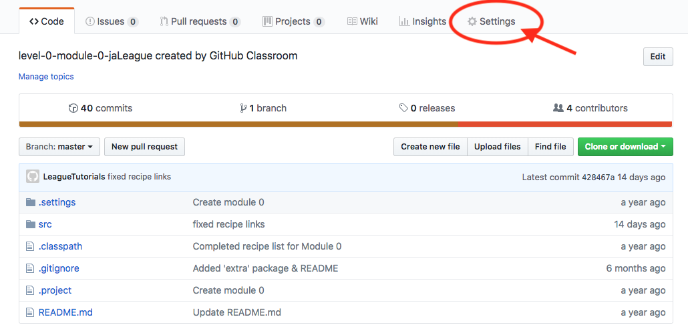
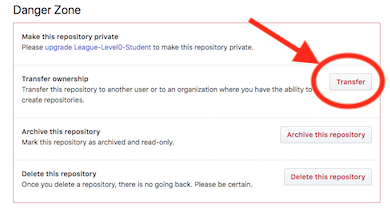
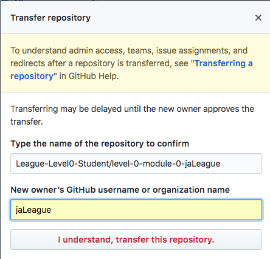
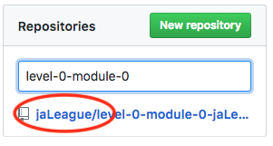

Student Passed the Exam!
Now Save the Completed Code
When a student passes an End-of-Level Exam, if they want to keep the code they have written (and this is highly recommended), they should move it out of The League's and into their own GitHub organization for safe-keeping. How do they do this?
- In a web browser, they must sign in to their GitHub account
- In the list of their repositories, find the one they are going to save.
- If they have a lot of repositories, enter search criteria, e.g. "level-0-module-0" to shorten the list (see below)
- Notice that the repository name begins with "League" and they need to move it to their username.
- Select the repository to transfer (see above) then select its "Settings" option (see below).
Note: If there is no "Settings" option offered, skip to next section, "Fork the Completed Code". - On the Settings page, scroll down to the bottom until they reach the "Danger Zone" and select the "Transfer" option.
- A pop-up window will ask them to type in the "current repository name" and the "new owner's GitHub username" (see below).
- The current name can be found in the URL at the top of the browser. In the example shown here it is: "League-Level0-Student/level-0-module-0-jaLeague". The new owner's GitHub name is the student's GitHub username, and should be the same as the last part of the current repository name, in this case: "jaLeague"
- Click the "I understand, transfer this repository" button and they should return to their GitHub dashboard.
- Now if they search for the same module in their list of repositories, it will be in their personal organization.
- Repeat the above steps for each module in the level the student just passed.




